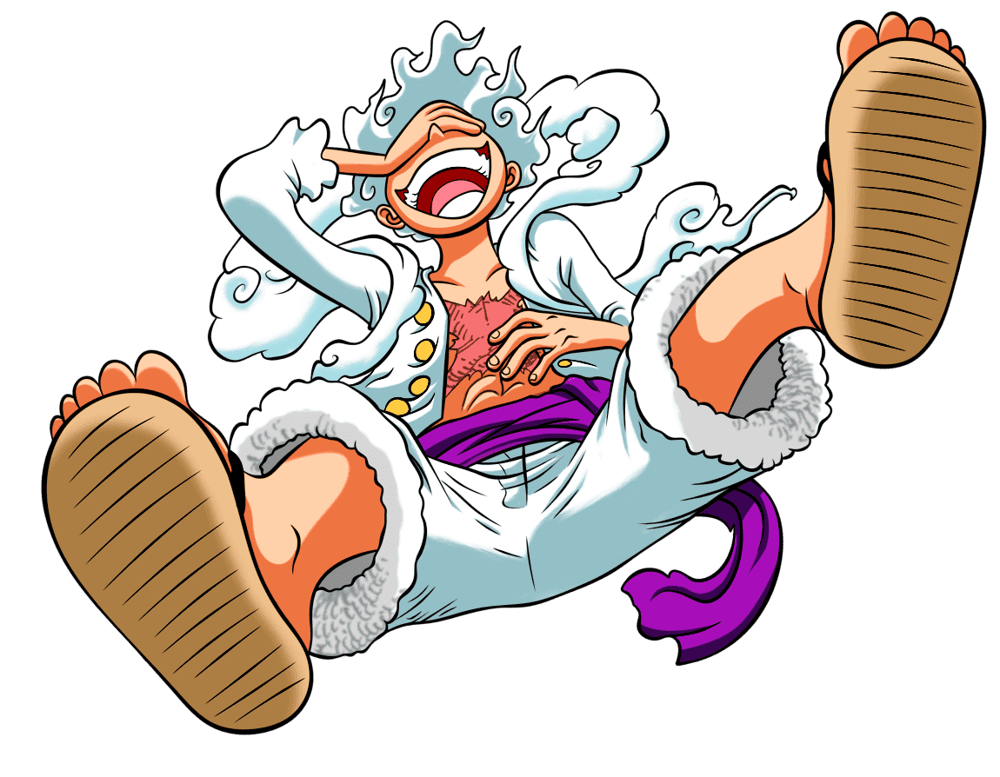
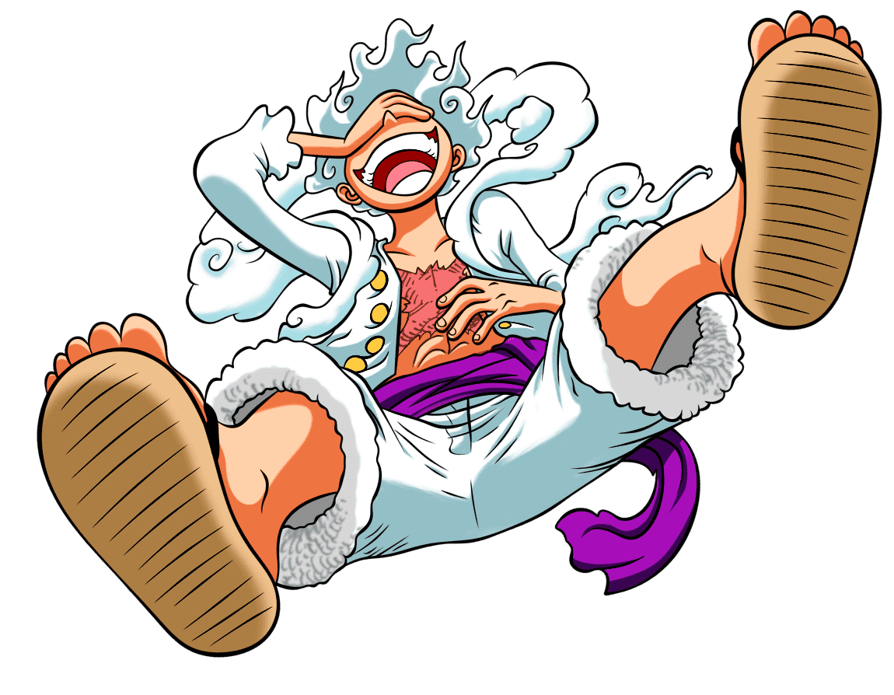

Arcos, sagas y los capítulos que incluyen
-
Saga del East Blue
Aquí empieza toda la historia y vemos los inicios de lo que será la tripulación de los Sombrero de Paja, empezando con la primera aventura de Luffy y cuando comienza a formarse el grupo antes de partir al Grand Line.
Arco de Romance Dawn
Capítulos 1 a 3
Arco de Orange Town
Capítulos 4 a 8
Arco de Villa Syrup
Capítulos de 9 a 18
Arco de Baratie
Capítulos de 19 a 30
Arco de Arlong Park
Capítulos de 31 a 44
Arco de Loguetown
Capítulo 45 y capítulos 48 a 54
Arco de la Banda de Buggy
Capítulos 46 y 47
Arco del Dragón Milenario
Capítulos 54 a 61
-
Saga de Arabasta
Han entrado en el Grand Line y la banda sigue creciendo. Deciden ayudar a la princesa Nefertari Vivi a detener la guerra civil de su país y detener a la banda de mercenarios conocida como Baroque Works.
Arco de Reverse Mountain
Capítulos 62 y 63
Arco de Whiskey Peak
Capítulos 64 y 67
Arco de Coby y Helmeppo
Capítulos 68 y 69
Arco de Little Garden
Capítulos 70 a 77
Arco de la Isla Drum
Capítulos 78 a 91
Arco de Arabasta
Capítulos 92 a 130
Arco de Historias de los Sombrero de Paja
Capítulos 131 a 135
-
Saga de Skypiea
Tras dejar atrás Arabasta, el Log Pose de Nami comienza a apuntar en una dirección muy extraña: hacia arriba. Hay una isla en el cielo y los piratas del Going Merry no van a dejar pasar la oportunidad de visitarla, así que terminan en una tierra misteriosa con un conflicto que lleva varios años a punto de explotar.
Arco de la Isla Cabra
Capítulos 136 a 138
Arco de la Niebla Arcoíris
Capítulos 139 a 143
Arco de Jaya
Capítulos 144 a 152
Arco de Skypiea
Capítulos 153 a 195
Arco de la Fortaleza Naval G-8
Capítulos 196 a 206
-
Saga de Water Seven

Tras dejar atrás la Isla del Cielo, el Merry necesita reparaciones, así que el siguiente paso en el viaje es encontrar un carpintero que se una a la tripulación. Aunque por el camino, los Sombreros de Paja se ven envueltos en una feroz competición contra otra tripulación pirata y un tesoro perdido.
Arco de Long Ring Long Land
Capítulos 207 a 219
Arco de Ocean's Dream
Capítulos 220 a 224
Arco del Regreso de Foxy
Capítulos 225 y 226
Arco de Water 7
Capítulos 227 a 265
Arco de Enies Lobby
Capítulos 226 a 312
Arco Post-Enies Lobby
Capítulos 313 a 225
-
Saga de Thriller Bark

Antes de llegar al Nuevo Mundo, la tripulación deben navegar por un extraño mar donde es muy fácil perderse para siempre. Terminan siendo capturados en la isla de Thriller Bark, que está plagada de zombies y un nuevo villano quiere arrebatarles sus sombras.
Arco de Ice Hunter
Capítulos 326 a 336
Arco de Thriller Bark
Capítulos 337 a 381
Arco de la Isla Spa
Capítulos 382 a 384
-
Saga de la Guerra de Marineford
Esta saga marca el final de la primera parte del anime antes del salto temporal. La tripulación se separa en medio de un conflicto que escala muy rápido.
Arco del Archiélago de Sabaody
Capítulos 385 a 407
Arco de Amazon Lily
Capítulos 408 a 421
Arco de Impel Down
Capítulos 422 a 425, y capítulos 430 a 456
Arco del Pequeño East Blue
Capítulos 436 a 429
Arco de Marineford
Capítulos 457 a 489
Arco Post-Marineford
Capítulos 490 a 516
-
Saga de Isla Gyojin

Tras un salto temporal de dos años, la tripulación de Luffy vuelve por fin a reunirse en el Archipiélago Sabaody para continuar su camino hacia el Nuevo Mundo...aunque antes deberán pasar por la isla de los hombres peces.
Arco de Regreso a Sabaody
Capítulos 517 a 522
Arco de la Isla Gyojin
Capítulos 523 a 574
-
Saga de Dressrosa
Una de las sagas más largas de toda la historia y marca la entrada de lleno de los Piratas de Sombrero de Paja en el Nuevo Mundo. Es una región muy peligrosa donde nos encontramos con algunos de los piratas más feroces del Grand Line.
Arco de la Ambición de Z
Capítulos 575 a 578
Arco de Punk Hazard
Capítulos 579 a 625
Arco del Secuestro de César
Capítulos 626 a 628
Arco de Dressrosa
Capítulos 629 a 746
-
Saga de Whole Cake Island
Los Sombrero de Paja consiguen reunirse en Zou y empiezan a hacer los planes necesarios para enfrentarse a Kaidou. Sin embargo, Sanji cae en las garras de Big Mom, una peligrosa pirata y una de los Cuatro Emperadores, por lo que la tripulación tendrá que meterse de lleno en su territorio para rescatar al cocinero.
Arco de Silver Mine
Capítulos 747 a 750
Arco de Zou
Capítulos 751 a 779
Arco de los Supernovas de la Marina
Capítulos 780 a 782
Arco de Whole Cake Island
Capítulos 783 a 877
-
Saga del País de Wano
La saga más larga de toda la serie y que arrancó en 2019 para llevarnos a la tierra de los samurais. También conocida como la Saga de los Cuatro Emperadores, con una alianza masiva para derrotar a Kaido y el equilibrio de poderes en el mundo estando más frágil que nunca.
Arco de Levely
Capítulos 878 a 889
Arco de Cidre Guild
Capítulos 895 y 896
Arco del País de Wano
Capítulos 897 a 906
Especial de Romance Down
Capítulo 907
Arco del País de Wano - Parte 2
Capítulos 908 a 1028
Arco del Pasado de Uta
Capítulos 1029 a 1030
Arco del País de Wano - Parte 3
Capítulos 1031 a 1085
-
Saga Final
 
Twenty-First Season
Tras la derrota de Kaido y el nombramiento oficial de Luffy como uno de los Cuatro Emperadores del Mar, estamos cada vez más y más cerca de encontrar el One Piece y desvelar los secretos más grandes del mundo. Pero aunque estemos ya en la "Saga Final", todavía queda mucha historia por delante y no parece que Oda quiera despedirse pronto.
Arco de Egghead
Capítulos 1086 en adelante